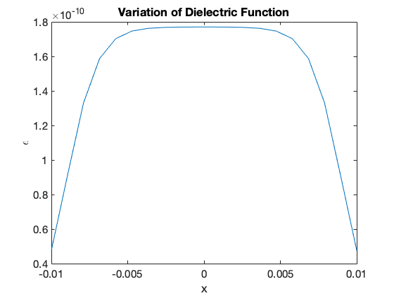
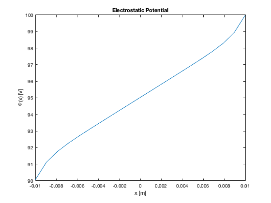
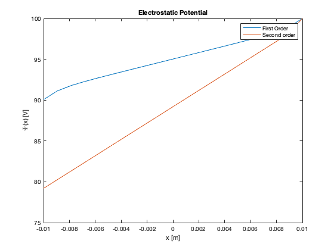
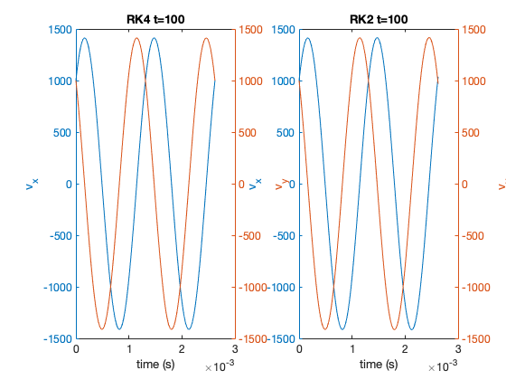
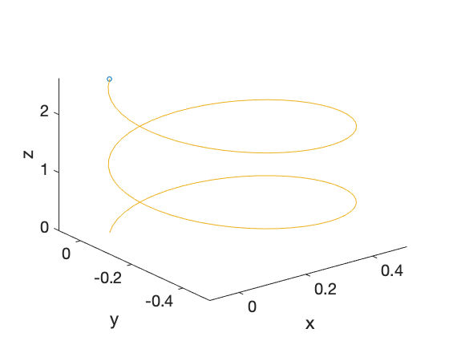
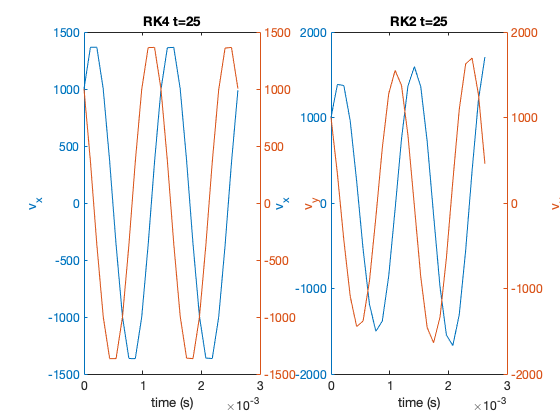
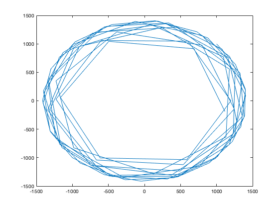

Contents
Introduction
clc
clearvars
close all
Problem 1
a = 0.01;
l = a/5;
xprime = -9*a/10;
xdprime = 9*a/10;
Eps0 = 8.854*10^-12;
lx = 20;
x = linspace(-a,a,lx);
disp('1-a');
Eps = Eps0*10*(tanh((x-xprime)/l)-tanh((x-xdprime)/l));
figure(1)
plot(x,Eps);
set(gca,'FontSize',15);
xlabel('x');
ylabel('\epsilon');
title('Variation of Dielectric Function')
gradeps = zeros(1,lx);
dx = x(2)-x(1);
gradeps(1) = (Eps(2)-Eps(1))/dx;
for i = 2:lx-1
gradeps(i) = (Eps(i+1)-Eps(i-1))/2/dx;
end
gradeps(lx) = (Eps(lx)-Eps(lx-1))/dx;
M2 = zeros(lx);
M2(1,1) = -1/dx;
M2(1,2) = 1/dx;
for i=2:lx-1
M2(i,i) = -2*Eps(i)/dx^2;
M2(i,i+1) = Eps(i)/dx^2 + gradeps(i)/2/dx;
M2(i,i-1) = Eps(i)/dx^2 - gradeps(i)/2/dx;
end
M2(lx,lx) = 1;
bc = zeros(lx,1);
bc(1) = 1000;
bc(lx) = 100;
a = M2\bc;
figure(2)
plot(x,a);
xlabel('x [m]')
ylabel('\Psi(x) [V]')
title('Electrostatic Potential')
disp('1-e')
gradEps=zeros(1,lx);
for i=1:lx-2
gradEps(i) = (-Eps(i+2)+ 4*Eps(i+1)-3*Eps(i))/(2/dx);
end
gradEps(lx-1) =(3*Eps(lx-1)-4*Eps(lx-2)+Eps(lx-3))/2/dx;
gradEps(lx) = (3*Eps(lx) -4*Eps(lx-1)+Eps(lx-2))/2/dx;
M2mod = zeros(lx);
M2mod(1,1) = -1/dx;
M2mod(1,2) = 1/dx;
for i=2:lx-1
M2mod(i,i) = -2*Eps(i)/dx^2;
M2mod(i,i+1) = Eps(i)/dx^2 + gradEps(i)/2/dx;
M2mod(i,i-1) = Eps(i)/dx^2 - gradEps(i)/2/dx;
end
M2mod(lx,lx) = 1;
a2 =M2mod\bc;
figure(3)
plot(x,a);
hold on
plot(x,a2);
xlabel('x [m]')
ylabel('\Psi(x) [V]')
title('Electrostatic Potential')
legend('First Order', 'Second order')
fprintf('The second order is clearly not working corrrectly. I tried troubleshooting, but I couldnt figure out \n what I''m doing wrong\n\n');
1-a
1-e
The second order is clearly not working corrrectly. I tried troubleshooting, but I couldnt figure out
what I'm doing wrong
  
Problem 2
m = 1.67*10^(-27);
q = 1.6*10^(-19);
B = 50000*10^-9;
omega=q*B/m;
tmin=0;
tmax=2*2*pi/abs(omega);
t=linspace(tmin,tmax,100);
dt=t(2)-t(1);
lt=numel(t);
disp('2-a');
vx=zeros(1,lt);
vy=zeros(1,lt);
vx(1)=1e3;
vy(1)=1e3;
for n=2:lt
vxhalf=vx(n-1)+dt/2*(omega*vy(n-1));
vyhalf=vy(n-1)-dt/2*(omega*vx(n-1));
vx(n)=vx(n-1)+dt*(omega*vyhalf);
vy(n)=vy(n-1)-dt*(omega*vxhalf);
end
Vx=zeros(1,lt);
Vy=zeros(1,lt);
Vx(1)=1e3;
Vy(1)=1e3;
for n=2:lt
k1x=dt*(omega*Vy(n-1));
k1y=-dt*(omega*Vx(n-1));
k2x=dt*omega*(Vy(n-1)+k1y/2);
k2y=-dt*omega*(Vx(n-1)+k1x/2);
k3x=dt*omega*(Vy(n-1)+k2y/2);
k3y=-dt*omega*(Vx(n-1)+k2x/2);
k4x=dt*omega*(Vy(n-1)+k3y);
k4y=-dt*omega*(Vx(n-1)+k3x);
Vx(n)=Vx(n-1)+1/6*(k1x+2*k2x+2*k3x+k4x);
Vy(n)=Vy(n-1)+1/6*(k1y+2*k2y+2*k3y+k4y);
end
x=cumtrapz(t,vx);
y=cumtrapz(t,vy);
vz=1e3;
z=vz*t;
figure(4);
subplot(1,2,1)
ax=plotyy(t,Vx,t,Vy);
set(ax(1),'FontSize',12);
set(ax(2),'FontSize',12);
xlabel('time (s)');
ylabel(ax(1),'v_x');
ylabel(ax(2),'v_y');
title('RK4 t=100');
subplot(1,2,2)
ax=plotyy(t,vx,t,vy);
set(ax(1),'FontSize',12);
set(ax(2),'FontSize',12);
xlabel('time (s)');
ylabel(ax(1),'v_x');
ylabel(ax(2),'v_y');
title('RK2 t=100');
figure(5);
comet3(x,y,z)
set(gca,'FontSize',20);
xlabel('x');
ylabel('y');
zlabel('z');
disp('2-b')
t=linspace(tmin,tmax,25);
dt=t(2)-t(1);
lt=numel(t);
vx=zeros(1,lt);
vy=zeros(1,lt);
vx(1)=1e3;
vy(1)=1e3;
for n=2:lt
vxhalf=vx(n-1)+dt/2*(omega*vy(n-1));
vyhalf=vy(n-1)-dt/2*(omega*vx(n-1));
vx(n)=vx(n-1)+dt*(omega*vyhalf);
vy(n)=vy(n-1)-dt*(omega*vxhalf);
end
Vx=zeros(1,lt);
Vy=zeros(1,lt);
Vx(1)=1e3;
Vy(1)=1e3;
for n=2:lt
k1x=dt*(omega*Vy(n-1));
k1y=-dt*(omega*Vx(n-1));
k2x=dt*omega*(Vy(n-1)+k1y/2);
k2y=-dt*omega*(Vx(n-1)+k1x/2);
k3x=dt*omega*(Vy(n-1)+k2y/2);
k3y=-dt*omega*(Vx(n-1)+k2x/2);
k4x=dt*omega*(Vy(n-1)+k3y);
k4y=-dt*omega*(Vx(n-1)+k3x);
Vx(n)=Vx(n-1)+1/6*(k1x+2*k2x+2*k3x+k4x);
Vy(n)=Vy(n-1)+1/6*(k1y+2*k2y+2*k3y+k4y);
end
figure(6);
subplot(1,2,1)
ax=plotyy(t,Vx,t,Vy);
set(ax(1),'FontSize',12);
set(ax(2),'FontSize',12);
xlabel('time (s)');
ylabel(ax(1),'v_x');
ylabel(ax(2),'v_y');
title('RK4 t=25');
subplot(1,2,2)
ax=plotyy(t,vx,t,vy);
set(ax(1),'FontSize',12);
set(ax(2),'FontSize',12);
xlabel('time (s)');
ylabel(ax(1),'v_x');
ylabel(ax(2),'v_y');
title('RK2 t=25');
fprintf('As seen in plot, when timestep is set to 25 RK 4 still manages to accurately solve the problem ');
fprintf('\n while RK2 has failed. Therefore, RK4 is better since it can solve with fewer timesteps.\n')
disp('2-c')
y=linspace(0,5,100);
By=zeros(1,100);
By=B*(1+0.5*(y));
omega=q*By/m;
tmax=5*2*pi/abs(omega(1));
t=linspace(tmin,tmax,100);
dt=t(2)-t(1);
lt=numel(t);
Vx=zeros(1,lt);
Vy=zeros(1,lt);
Vx(1)=1e3;
Vy(1)=1e3;
for n=2:lt
k1x=dt*(omega(n-1)*Vy(n-1));
k1y=-dt*(omega(n-1)*Vx(n-1));
k2x=dt*omega(n-1)*(Vy(n-1)+k1y/2);
k2y=-dt*omega(n-1)*(Vx(n-1)+k1x/2);
k3x=dt*omega(n-1)*(Vy(n-1)+k2y/2);
k3y=-dt*omega(n-1)*(Vx(n-1)+k2x/2);
k4x=dt*omega(n-1)*(Vy(n-1)+k3y);
k4y=-dt*omega(n-1)*(Vx(n-1)+k3x);
Vx(n)=Vx(n-1)+1/6*(k1x+2*k2x+2*k3x+k4x);
Vy(n)=Vy(n-1)+1/6*(k1y+2*k2y+2*k3y+k4y);
end
figure(7);
plot(Vx,Vy);
fprintf('The plot is clearly not trochoidal, and I''m not sure why');
2-a
2-b
As seen in plot, when timestep is set to 25 RK 4 still manages to accurately solve the problem
while RK2 has failed. Therefore, RK4 is better since it can solve with fewer timesteps.
2-c
The plot is clearly not trochoidal, and I'm not sure why
   